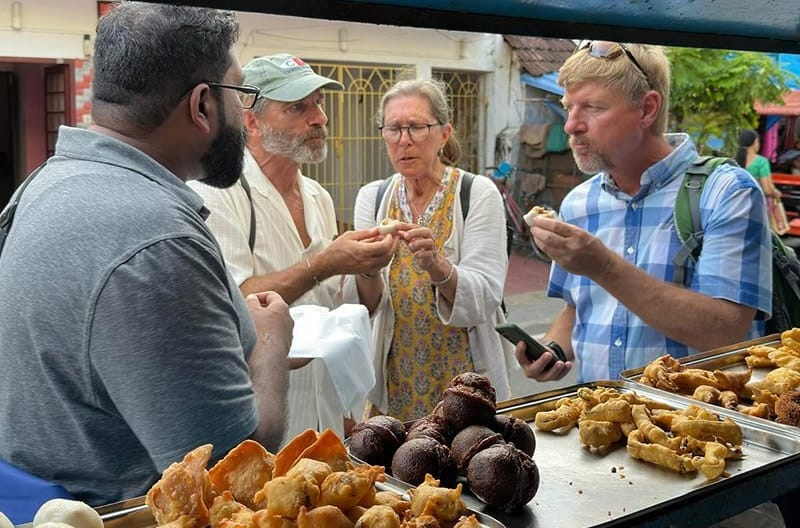
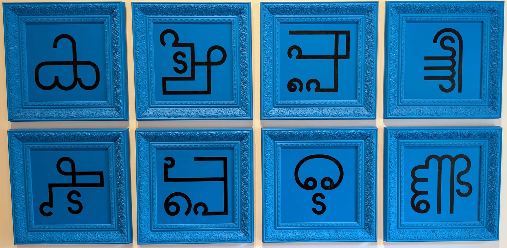

Meet the guardians — the Fearless Collective mural
The people who sell you the fish, painted at four times life size on the wall you walk past to reach the beach. Free, outdoors, and it is always there.
Fort Kochi and Mattancherry, told by people who live here. We give you an order to do it in, not a list of sights.
Fort Kochi, right now — Friday, 1.15pm
Heavy rain from mid-afternoon. Do the outdoor things before two.
The people who sell you the fish, painted at four times life size on the wall you walk past to reach the beach. Free, outdoors, and it is always there.
The pages that go out of date. Each one carries the day we last checked it.
A stance, not a ranking. Written for two days and no plan. Somebody else would choose differently, and we would rather say so than call this "the best".
Come for the ceiling, not the coffee.
What the gallery keeps in the second room.

Samosas, jalebis, and a lassi you drink standing up.
Other ways in

Wednesday to Sunday, and Tuesdays if you ask.
Four days in Kochi is not four daily pages. It is an order — which day for the fort, which for the islands, which one you keep loose because half of Mattancherry is shut. We write that order for your dates, and we keep it right while you are here.
Price — we have not set one yet. Tell us your dates and we will say what it costs before we write a word.
What that includesOnce a month
The events worth your evening, the ones that moved, and what we checked this month. Free.
We only use your address for this. Unsubscribe in one click, any time.
Airbnb's homepage opens with a search bar because their reader already holds the three inputs it wants — a city, some dates, a number of people — and the bar is a filter over a structured database, not a lookup. A traveller planning Fort Kochi holds one of those inputs and none of the vocabulary: they do not know the words "Pepper House", "Muziris Contemporary" or "Kayees" until after they arrive. A search box serves the reader who can already name the thing — and that reader arrives from Google on the page itself and never sees this one.
⭐ So the slot keeps Airbnb's job and changes its shape. The one input every visitor has is how long they are here, which is the top-ranked question in the demand study by a distance and is also the only real input the paid itinerary takes.
⛔ Unbuilt. "One day" / "Two days" / "Three or four" are three pages that do not exist. The repository holds one itinerary guide, not three. This control is a proposal, not a link.
href is #top. Nothing navigates.data-count-slot="answer_pages"
instead of a number, because nobody has counted those pages and a number
typed into a mockup becomes the number everybody quotes.All five are real photographs from the site's own Ghost library, opened and looked at, not selected from filenames. There is no provenance or licence record for any image in that library — the cache manifest is a 47-entry de-duplication map and records no photographer, no rights and no consent. Two specific risks the owner should know about:
Measured over the wire, 10 Aug 2026: HTML 56 KB, the Figtree faces 55 KB, and then 411 + 290 + 236 + 167 + 86 KB of JPEG. These are the untouched Ghost originals — 2000px wide files being painted into a 327px column. The reader this site exists for is on mobile data in Kerala.
⭐ Nothing about the design causes this and nothing in the design fixes
it: it needs the responsive image component
DESIGN-DIRECTION.md already requires — correct sizes per
device, modern formats, explicit width and height. At 375 CSS px on a
2× screen the largest file any of these needs to be is about 750px wide,
which lands each of them near 40–70 KB. That is roughly 1.19 MB
down to 0.25 MB, for no visible change. Until that exists, this
page is a design proof and not a shippable homepage.
All six were invisible in the source, and several of them passed every check that was run before somebody looked at the page. They are listed so the next person to touch this kit does not reintroduce them, and so the cost of reviewing a design by reading its CSS is on the record.
#0000EE blue. The kit had no base a
rule, and the lead card's <a> wraps the headline. It
scored 9.16:1 — so a contrast audit passed it. Passing
contrast and being the wrong colour are different questions. Fixed with
one base rule; the venue kit learned the same thing on its "instead" link.<a> without its hit box overlapping the lines
above and below. They became chips, the same component as the chooser.inline-flex
and a 52px minimum passed the tap check and opened a 30px hole
through the middle of a two-line sentence. Rendering showed that; the
measurement did not. The overlay moved out to the whole "Instead:" line,
layered above the row's own overlay and probed with
elementFromPoint at nine points.⚠️ And one trap in the checking, not the page. Four of
the five photographs sit below the fold with loading="lazy", so
on a first measurement they report naturalWidth: 0 — never
requested, which is indistinguishable from a 404. The fail-loud guard below
cannot fire on them either, because it hooks onerror and no
request was made. Force every image eager before measuring, and read
the canvas pixel range rather than trusting naturalWidth or a
screenshot — two screenshots showed blank grey for images whose
bitmaps were verifiably present.